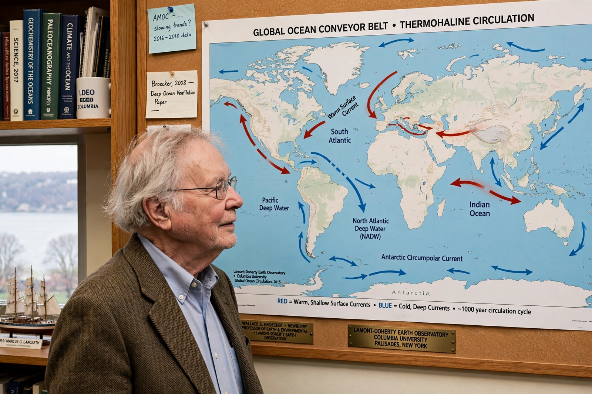

Wallace Smith Broecker
| Wallace Smith Broecker | |
|---|---|
| Born | 29 November 1931, Chicago, Illinois |
| Died | 18 February 2019, New York City |
| Field | Geochemistry, oceanography |
| Known for | Ocean conveyor concept; abrupt climate change |

Wallace Smith Broecker (1931–2019) was an American geochemist at Columbia University's Lamont–Doherty Earth Observatory who reshaped understanding of how the oceans drive climate. He popularised the image of a global 'conveyor belt' of ocean circulation and gave {L('Global_warming')} its name in print in 1975.
Broecker warned for decades that the climate system could shift abruptly — that it is, in his famous phrase, an 'angry beast' that humans are poking with sticks.
Work
Using radiocarbon and other tracers, Broecker mapped how deep water forms and travels (see {L('Thermohaline_circulation')}), and championed the idea that reorganisation of this circulation helped flip the climate in and out of ice ages and triggered abrupt events such as the Younger Dryas cold snap. His 1975 paper 'Climatic change: Are we on the brink of a pronounced global warming?' put the now-universal term into the literature at a time when many headlines speculated about cooling.
Late in his career he advocated research into carbon capture and storage, co-founding work on removing CO₂ directly from air, arguing emissions cuts alone might come too late to avoid dangerous thresholds.
Recognition
Broecker received the US National Medal of Science (1996) and many other honours, and trained generations of oceanographers and paleoclimatologists. His conveyor-belt diagram, though simplified beyond what oceanographers now accept, remains the standard first picture of the global overturning circulation.
See also: Thermohaline circulation · Global warming · Ocean current · Climate change · Carbon cycle